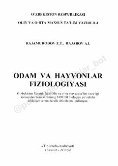

OVOdam va hayvonlar fiziologiyasi bo'yicha oliy ta'lim uchun mo'ljallangan fundamental darslik.
Mazkur darslik oliy ta'lim muassasalarining biologiya, ekologiya, tibbiyot va chorvachilik yo'nalishlari uchun mo'ljallangan. Unda odam va hayvonlar organizmidagi hayotiy jarayonlar, to'qimalar va organlar tizimlarining funksiyalari qiyosiy tahlil qilingan.